Executed exploratory analysis · Self-reported measures
An exploratory analysis of self-reported survey responses. Weak internal consistency and large repeated-record effects limit construct interpretation. The indices do not objectively measure intelligence, memory, cognitive ability, or clinical conditions.
The supplied CSV contains 2,613 rows and 30 columns, matching the specified schema, with no missing values. There are 451 exact duplicate rows beyond their first occurrences. The primary analysis gives each of 2,162 distinct complete response patterns equal weight. Full-row files are retained and sensitivity analyses preserve original multiplicity. Identical answers do not prove repeated respondents. Some full patterns occur 100 or 200 times. Possible department synonyms remain separate because no authoritative category mapping was supplied.
Five prespecified five-item averages are calculated after the exact Likert labels are mapped from 1 to 5. Raw Cronbach's alpha uses sample variances. These values are internal consistency evidence, not construct validity. The weak primary values mean these averages are descriptive exploratory summaries. No items were removed or recoded to improve alpha. Tavakol and Dennick (2011).
| construct | alpha_primary_distinct | alpha_all_rows |
|---|---|---|
| AI_Usage_Index | 0.3331 | 0.4794 |
| AI_Dependency_Index | 0.3234 | 0.7062 |
| AI_Trust_Index | 0.2839 | 0.6100 |
| Cognitive_Offloading_Index | 0.5291 | 0.5563 |
| Academic_Decision_Index | 0.2207 | 0.5534 |
Primary distinct-pattern summaries:
| construct | count | mean | std | min | 25% | 50% | 75% | max |
|---|---|---|---|---|---|---|---|---|
| AI_Usage_Index | 2162.0000 | 3.8198 | 0.6020 | 1.2000 | 3.4000 | 3.8000 | 4.2000 | 5.0000 |
| AI_Dependency_Index | 2162.0000 | 3.7224 | 0.6086 | 1.4000 | 3.4000 | 3.8000 | 4.0000 | 5.0000 |
| AI_Trust_Index | 2162.0000 | 3.7578 | 0.5825 | 1.8000 | 3.4000 | 3.8000 | 4.2000 | 5.0000 |
| Cognitive_Offloading_Index | 2162.0000 | 3.7544 | 0.7011 | 1.6000 | 3.4000 | 3.8000 | 4.2000 | 5.0000 |
| Academic_Decision_Index | 2162.0000 | 3.7790 | 0.5582 | 1.6000 | 3.4000 | 3.8000 | 4.2000 | 5.0000 |
Spearman rho is appropriate for monotonic relationships among tied Likert-derived averages. Two-sided asymptotic p-values assume independent records; Holm correction is applied across six tests per analysis population. Statistical evidence does not establish practical importance or causation. SciPy Spearman reference.
| x | y | rho | p_value | p_holm |
|---|---|---|---|---|
| AI_Usage_Index | AI_Dependency_Index | 0.139789 | 6.660e-11 | 1.332e-10 |
| AI_Dependency_Index | Cognitive_Offloading_Index | 0.284488 | 1.559e-41 | 7.797e-41 |
| AI_Trust_Index | AI_Dependency_Index | 0.268906 | 3.958e-37 | 1.583e-36 |
| AI_Dependency_Index | Academic_Decision_Index | 0.066834 | 0.001875 | 0.001875 |
| AI_Usage_Index | Cognitive_Offloading_Index | 0.182869 | 1.031e-17 | 3.094e-17 |
| AI_Trust_Index | Cognitive_Offloading_Index | 0.312740 | 2.894e-50 | 1.737e-49 |
All-row p-values may be optimistic if repetitions are repeated submissions. Different row weights change the estimand.
| sample | x | y | rho | p_holm |
|---|---|---|---|---|
| primary_distinct | AI_Usage_Index | AI_Dependency_Index | 0.139789 | 1.332e-10 |
| primary_distinct | AI_Dependency_Index | Cognitive_Offloading_Index | 0.284488 | 7.797e-41 |
| primary_distinct | AI_Trust_Index | AI_Dependency_Index | 0.268906 | 1.583e-36 |
| primary_distinct | AI_Dependency_Index | Academic_Decision_Index | 0.066834 | 0.001875 |
| primary_distinct | AI_Usage_Index | Cognitive_Offloading_Index | 0.182869 | 3.094e-17 |
| primary_distinct | AI_Trust_Index | Cognitive_Offloading_Index | 0.312740 | 1.737e-49 |
| all_rows_sensitivity | AI_Usage_Index | AI_Dependency_Index | 0.389249 | 1.401e-94 |
| all_rows_sensitivity | AI_Dependency_Index | Cognitive_Offloading_Index | 0.358106 | 2.013e-79 |
| all_rows_sensitivity | AI_Trust_Index | AI_Dependency_Index | 0.545089 | 2.172e-201 |
| all_rows_sensitivity | AI_Dependency_Index | Academic_Decision_Index | 0.312840 | 4.000e-60 |
| all_rows_sensitivity | AI_Usage_Index | Cognitive_Offloading_Index | 0.232072 | 2.732e-33 |
| all_rows_sensitivity | AI_Trust_Index | Cognitive_Offloading_Index | 0.369583 | 9.057e-85 |
Group counts, ties, skew, quartiles and boxplots were inspected before tests. Rank tests suit the bounded discrete outcomes. Other university type has only four distinct patterns, so university omnibus H tests and small-group pairwise U tests use 9,999 seeded permutations. H uses its upper tail for any group difference; U comparisons are two-sided. No outcomes are missing, but respondent independence and null exchangeability remain unverified. SciPy permutation reference. Interpret results as distribution/rank differences, not necessarily median shifts. Rank-biserial effect is 2U/(n1*n2)-1 for the alphabetically first versus second group; rank epsilon squared is H/(N-1) for multiple groups. Holm adjustment covers six omnibus comparisons. Exploratory university pairwise results have their own six-test Holm correction in the exported table. Mann–Whitney U reference, Kruskal–Wallis reference.
| outcome | grouping | test | statistic | p_holm | effect_size | effect_name |
|---|---|---|---|---|---|---|
| AI_Dependency_Index | Gender | Mann-Whitney U | 647816.500000 | 0.000054 | 0.109655 | rank_biserial_first_vs_second |
| AI_Dependency_Index | University Type | Kruskal-Wallis H (9999 permutations) | 15.938834 | 0.001000 | 0.007376 | rank_epsilon_squared |
| AI_Dependency_Index | Academic Level | Mann-Whitney U | 591853.500000 | 0.498154 | 0.016751 | rank_biserial_first_vs_second |
| Cognitive_Offloading_Index | Gender | Mann-Whitney U | 627901.000000 | 0.009015 | 0.075541 | rank_biserial_first_vs_second |
| Cognitive_Offloading_Index | University Type | Kruskal-Wallis H (9999 permutations) | 6.445771 | 0.068400 | 0.002983 | rank_epsilon_squared |
| Cognitive_Offloading_Index | Academic Level | Mann-Whitney U | 615825.500000 | 0.057980 | 0.057933 | rank_biserial_first_vs_second |
Model A uses the five usage items plus all demographics. Model B additionally uses the trust, offloading and academic-decision averages, making it an expanded associational model. All dependency items and score variants are excluded from predictors. The seed-42 80/20 split contains 1,729 training and 433 test patterns. Five identical shuffled training folds are used across models. Scalers, imputers and one-hot encoders are fitted inside pipelines on training data only. Dummy, linear, ridge, random forest and gradient boosting models provide constant, additive, regularized and nonlinear benchmarks. Parameters are fixed; no test-driven tuning is performed. CV RMSE selects the candidate before all held-out results are computed. The selected pipeline is B/Gradient Boosting; it is saved without refitting on the test set. scikit-learn leakage guidance.
| feature_set | model | CV_RMSE_mean | CV_RMSE_sd | Test_MAE | Test_RMSE | Test_R2 | selected_by_cv |
|---|---|---|---|---|---|---|---|
| A | Random Forest | 0.5046 | 0.0273 | 0.4031 | 0.5340 | 0.2042 | False |
| A | Gradient Boosting | 0.5383 | 0.0238 | 0.4331 | 0.5428 | 0.1780 | False |
| A | Ridge | 0.5893 | 0.0241 | 0.4605 | 0.5815 | 0.0564 | False |
| A | Linear Regression | 0.5952 | 0.0248 | 0.4691 | 0.5887 | 0.0330 | False |
| A | Dummy | 0.6120 | 0.0186 | 0.4638 | 0.5987 | -0.0001 | False |
| B | Gradient Boosting | 0.4965 | 0.0301 | 0.3839 | 0.5036 | 0.2923 | True |
| B | Random Forest | 0.4989 | 0.0288 | 0.3851 | 0.5098 | 0.2749 | False |
| B | Ridge | 0.5392 | 0.0213 | 0.4230 | 0.5342 | 0.2038 | False |
| B | Linear Regression | 0.5442 | 0.0209 | 0.4264 | 0.5372 | 0.1949 | False |
| B | Dummy | 0.6120 | 0.0186 | 0.4638 | 0.5987 | -0.0001 | False |
All copies of a response pattern stay in the same partition and GroupKFold fold. The primary candidates are frozen before this analysis. Because the split is by pattern, the multiplicity-weighted row counts do not necessarily remain 80/20.
| feature_set | model | n_train | n_test | CV_MAE_mean | CV_RMSE_mean | CV_R2_mean | Test_MAE | Test_RMSE | Test_R2 |
|---|---|---|---|---|---|---|---|---|---|
| A | Random Forest | 2172 | 441 | 0.5210 | 0.6824 | 0.2292 | 0.3989 | 0.5333 | 0.2494 |
| A | Dummy | 2172 | 441 | 0.6585 | 0.8074 | -0.1127 | 0.5223 | 0.6528 | -0.1248 |
| B | Gradient Boosting | 2172 | 441 | 0.4691 | 0.6062 | 0.3852 | 0.3788 | 0.5024 | 0.3338 |
| B | Dummy | 2172 | 441 | 0.6585 | 0.8074 | -0.1127 | 0.5223 | 0.6528 | -0.1248 |
Residual is actual minus prediction. Positive values mean underprediction. There are 2 held-out predictions outside 1–5; predictions were not clipped. Largest-error cases are saved locally without demographics; they are not student diagnoses. Measurement noise, unobserved factors and model flexibility may contribute to errors, but these explanations are not established by the current analysis.
| quantity | count | mean | std | min | 5% | 25% | 50% | 75% | 95% | max |
|---|---|---|---|---|---|---|---|---|---|---|
| residual | 433.0000 | 0.0005 | 0.5042 | -1.8048 | -0.8268 | -0.2944 | 0.0260 | 0.2993 | 0.7960 | 1.3043 |
| absolute_error | 433.0000 | 0.3839 | 0.3263 | 0.0060 | 0.0226 | 0.1418 | 0.2993 | 0.5485 | 0.9856 | 1.8048 |
Permutation importance is computed on held-out rows using 20 seeded shuffles per original feature. Positive values indicate worsening RMSE after perturbation; standard deviations describe repeat variability, not confidence intervals. Correlated variables may share importance. Predictive importance does not establish a causal effect. scikit-learn permutation documentation. SHAP unavailable/incompatible: ModuleNotFoundError: No module named 'shap'. Valid permutation importance is the alternative.
| feature | RMSE_increase_mean | RMSE_increase_sd |
|---|---|---|
| Cognitive_Offloading_Index | 0.0587 | 0.0078 |
| AI_Trust_Index | 0.0428 | 0.0060 |
| Age | 0.0041 | 0.0021 |
| AI Usage [I use AI tools for assignment writing.] | 0.0022 | 0.0009 |
| Department/Discipline | 0.0020 | 0.0016 |
| University Type | 0.0019 | 0.0008 |
| Academic_Decision_Index | 0.0016 | 0.0009 |
| Gender | 0.0006 | 0.0005 |
| AI Usage [I use AI tools for study planning.] | 0.0006 | 0.0008 |
| AI Usage [I depend on AI tools to complete academic work faster.] | 0.0006 | 0.0006 |
| Academic Level | 0.0000 | 0.0000 |
| AI Usage [I use generative AI tools regularly for academic purposes.] | -9.274e-06 | 0.0004 |
| AI Usage [I use AI tools for research-related tasks.] | -3.972e-05 | 0.0001 |
K-Means uses only the five standardized indices, with k=2–6 and 20 initializations. The highest silhouette determines k; inertia is reported for context. PCA is visualization only, and all centroids are shown in original 1–5 units. Names were assigned only after printing centroids. The words lower/higher describe relative fitted profiles and do not define validated dependency categories. scikit-learn silhouette analysis.
| k | inertia | silhouette |
|---|---|---|
| 2 | 8630.8403 | 0.1716 |
| 3 | 7363.0869 | 0.2196 |
| 4 | 6480.8132 | 0.1873 |
| 5 | 5821.3274 | 0.1934 |
| 6 | 5267.1801 | 0.2013 |
| cluster | profile | n | AI_Usage_Index | AI_Dependency_Index | AI_Trust_Index | Cognitive_Offloading_Index | Academic_Decision_Index |
|---|---|---|---|---|---|---|---|
| 0 | Relatively lower dependency profile | 488 | 3.7119 | 3.1184 | 3.1262 | 3.0725 | 3.7340 |
| 1 | Relatively higher dependency profile | 222 | 4.7000 | 4.3514 | 4.4784 | 4.8324 | 4.2775 |
| 2 | Intermediate dependency profile 2 of 3 | 1452 | 3.7215 | 3.8292 | 3.8599 | 3.8187 | 3.7179 |
Evidence of an association after Holm adjustment: Spearman rho=0.140 (positive), raw p=6.66e-11, Holm-adjusted p=1.332e-10, n=2,162. This is a cross-sectional association, not causation.
Evidence of an association after Holm adjustment: Spearman rho=0.284 (positive), raw p=1.559e-41, Holm-adjusted p=7.797e-41, n=2,162. This is a cross-sectional association, not causation.
Evidence of an association after Holm adjustment: Spearman rho=0.269 (positive), raw p=3.958e-37, Holm-adjusted p=1.583e-36, n=2,162. This is a cross-sectional association, not causation.
Evidence of an association after Holm adjustment: Spearman rho=0.067 (positive), raw p=0.001875, Holm-adjusted p=0.001875, n=2,162. This is a cross-sectional association, not causation.
The selected Model A improves on the dummy in both CV and held-out RMSE. A/Random Forest has CV RMSE=0.505; test MAE=0.403, RMSE=0.534, R²=0.204. The dummy test RMSE is 0.599; absolute RMSE improvement is 0.065 index units. Prediction refers to a weakly reliable item average in this sample; external usefulness is unestablished.
In the CV-selected B/Gradient Boosting model, the largest positive held-out permutation effects are: Cognitive offloading (RMSE increase 0.0587 ± repeat SD 0.0078); AI trust (RMSE increase 0.0428 ± repeat SD 0.0060); Age (RMSE increase 0.0041 ± repeat SD 0.0021); use AI tools for assignment writing. (RMSE increase 0.0022 ± repeat SD 0.0009); Department/Discipline (RMSE increase 0.0020 ± repeat SD 0.0016). Rankings are model-specific, affected by correlated inputs, and do not identify causes.
Among k=2–6, k=3 has the largest silhouette (0.220). PCA retains 60.8% of standardized variance in two dimensions. Mean subsample adjusted-Rand agreement is 0.838. The fitted profiles summarize these response patterns; the silhouette, centroid differences, weak scale reliability and lack of external validation do not establish naturally distinct student populations.
The four dependency-related research associations are positive, with primary Spearman coefficients from 0.067 to 0.284. The academic-decision association is particularly small despite its adjusted p-value. Usage items and demographics improve prediction over the training-mean baseline; the expanded Gradient Boosting model reaches test R²=0.292. Cognitive offloading and trust have the largest positive permutation effects in that fitted model. The 3-profile partition has silhouette 0.220, consistent with substantial overlap. Weak primary reliability and repeated-record sensitivity are central findings, so these results support an exploratory portfolio demonstration and further measurement/provenance investigation, not causal claims, validated student categories or individual assessments.
Run python build_project.py from the repository root. The script executes every notebook code cell in order, captures real outputs and figures, and stops on errors. It uses a standard-library notebook writer because nbformat/nbclient are unavailable locally. Core versions are pinned in requirements.txt; SHAP is optional and its execution status is reported above. The notebook includes the source code for every analysis. See README.md for the artifact map and data policy.
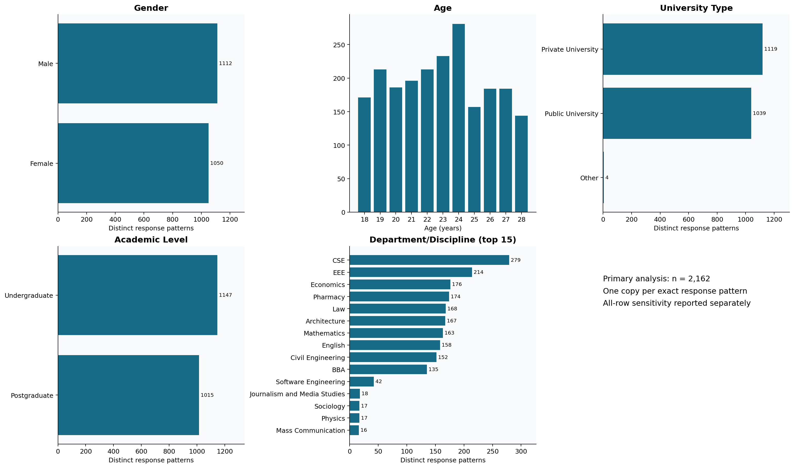
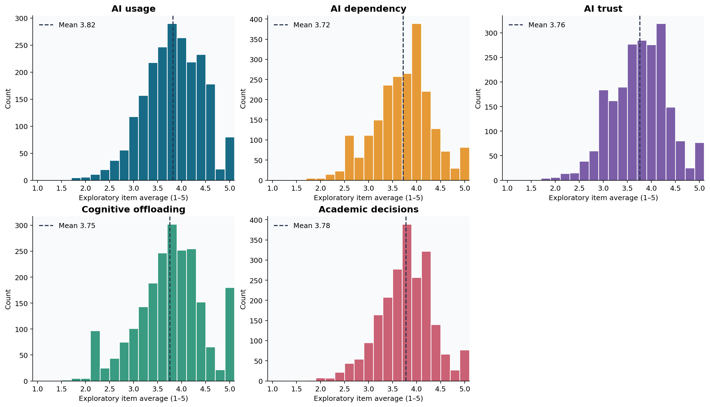
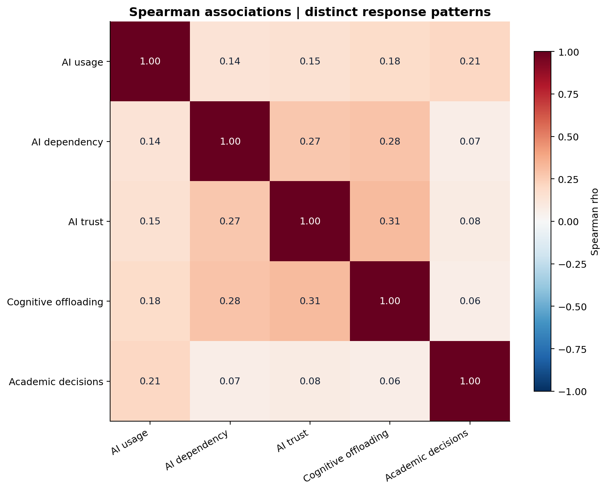
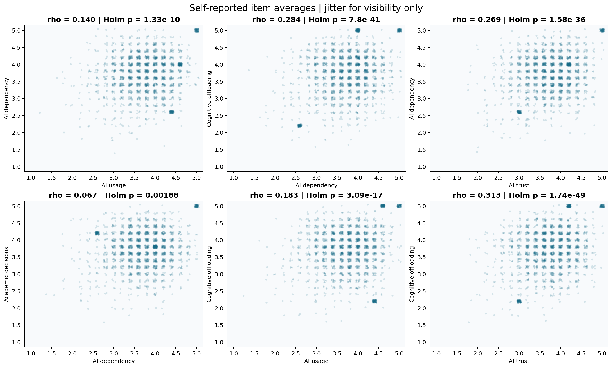
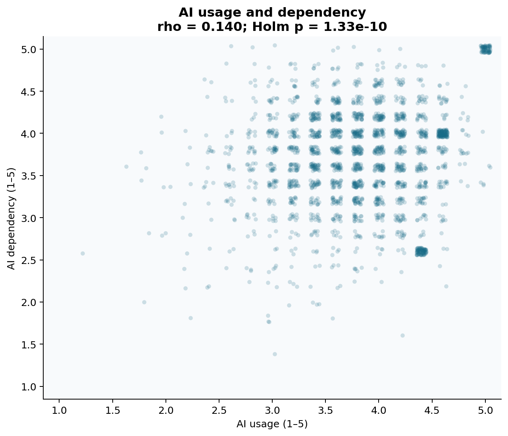
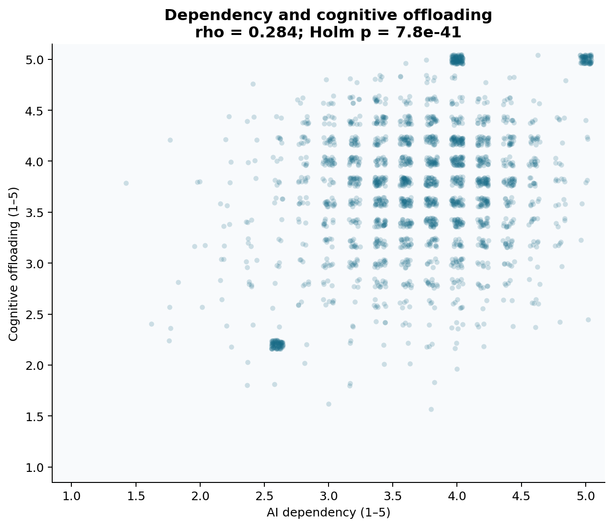
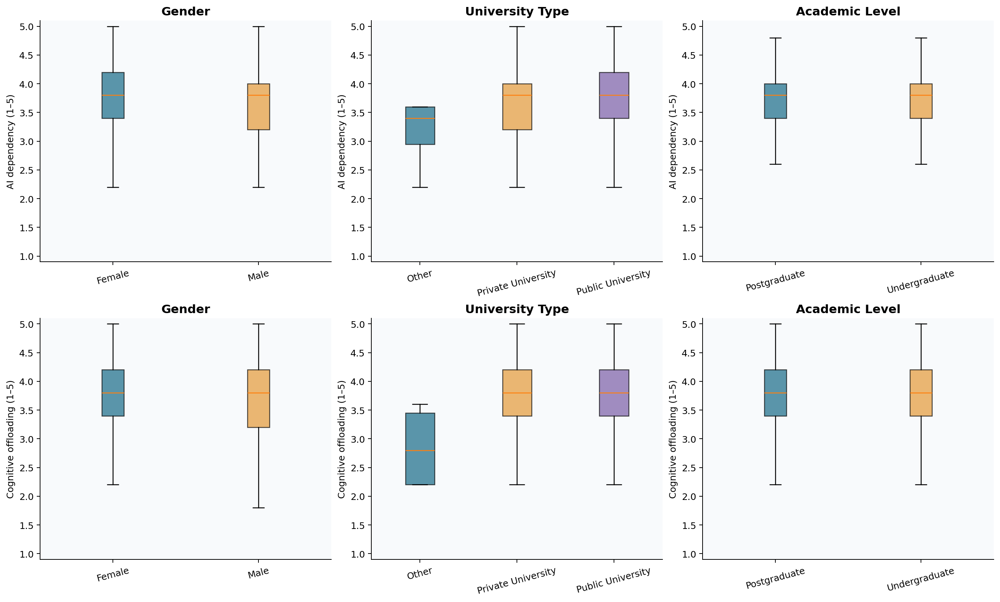
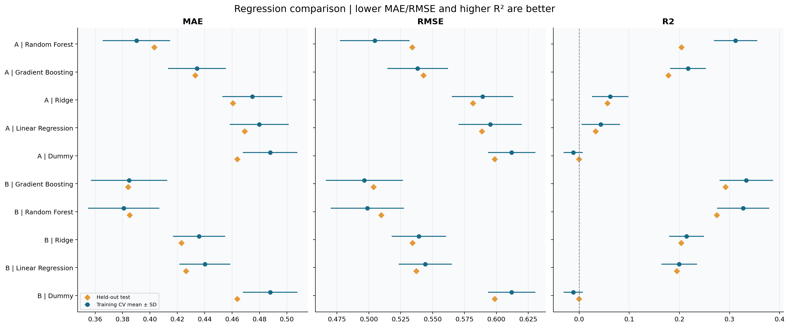
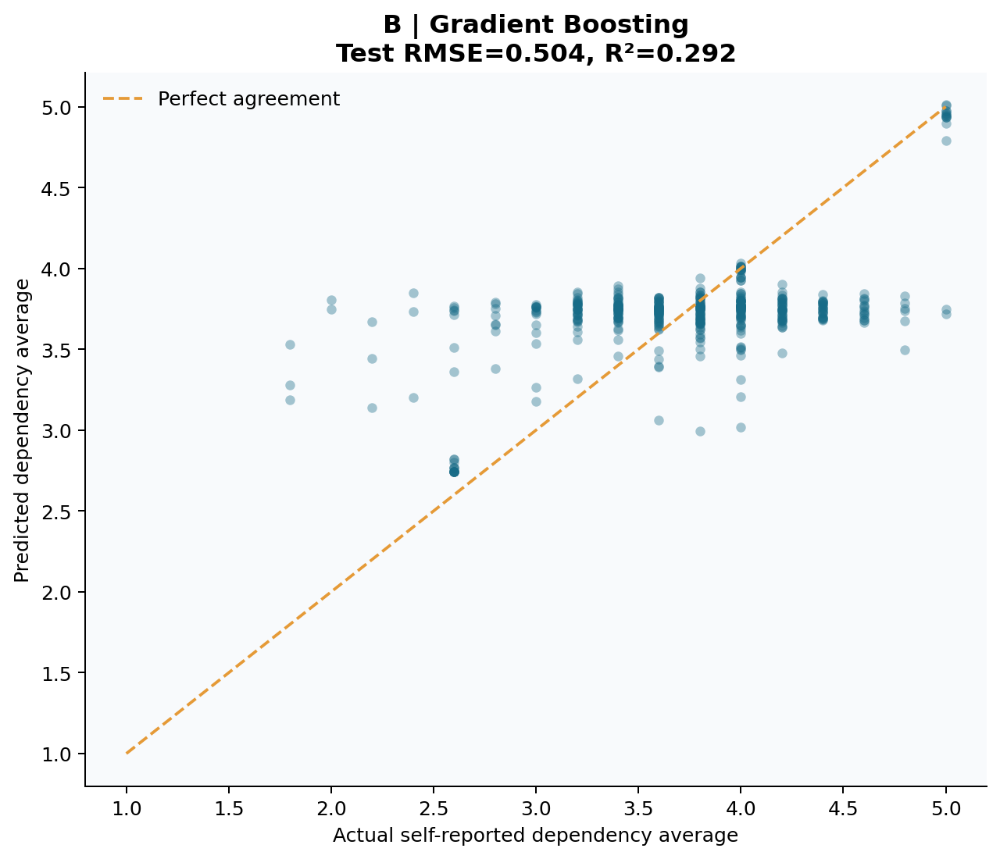
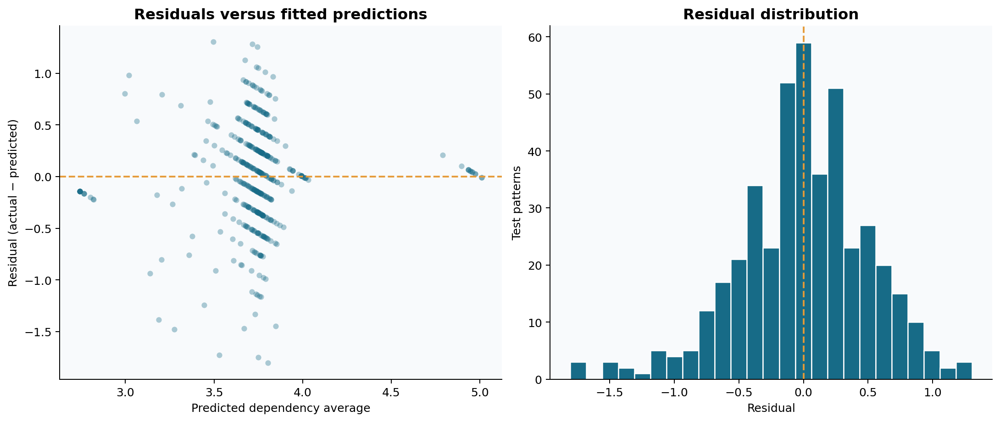
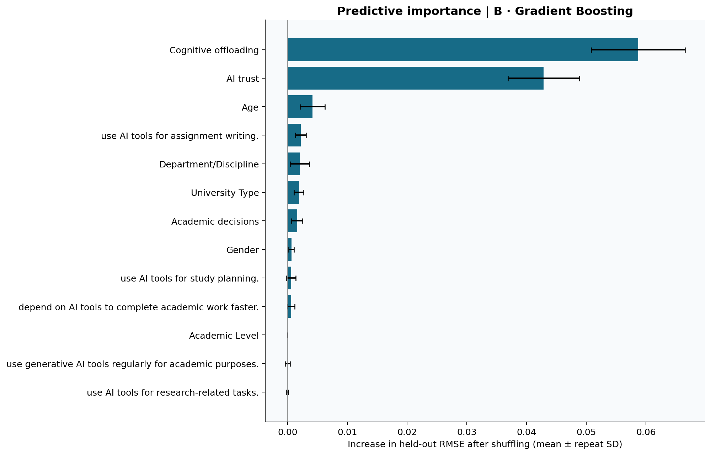
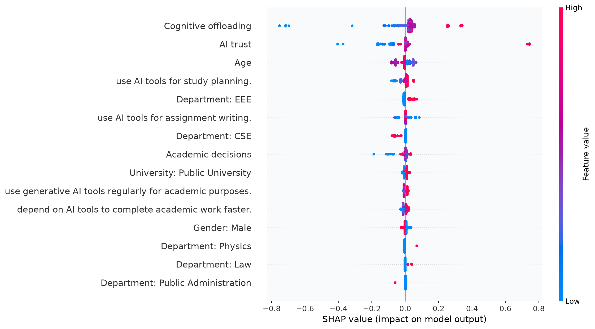
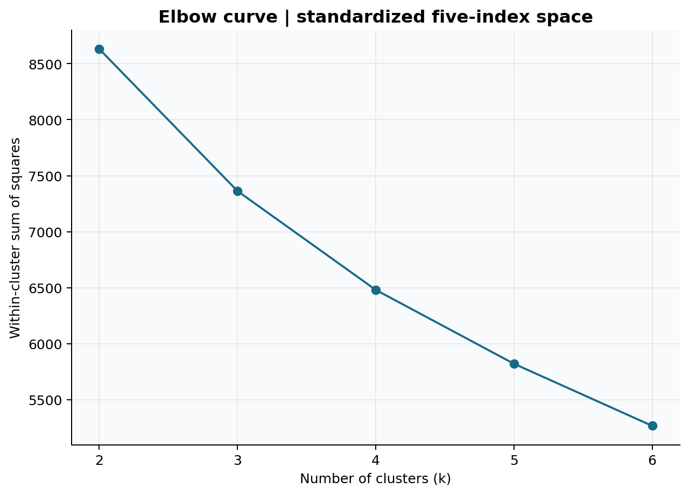
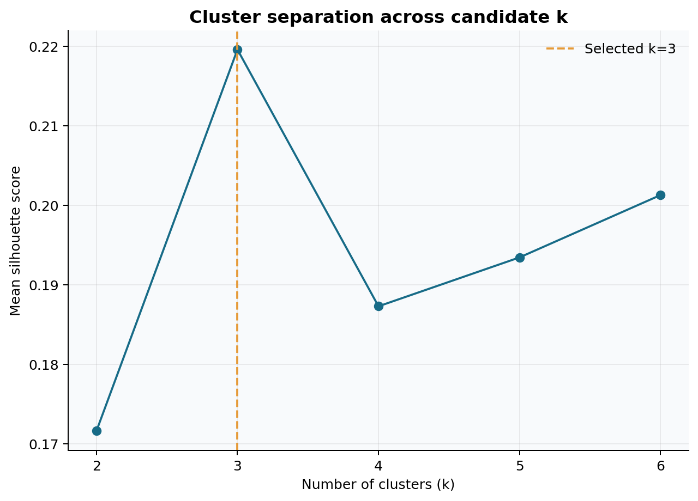
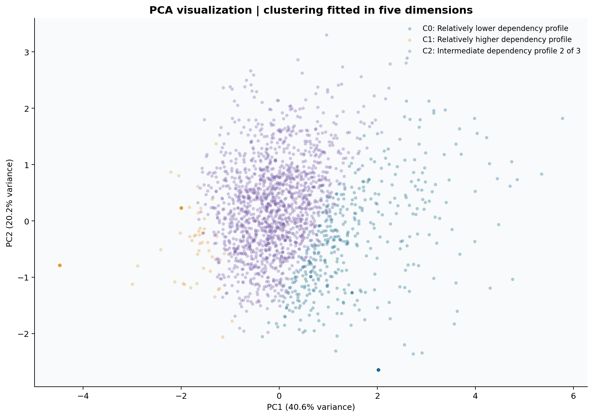
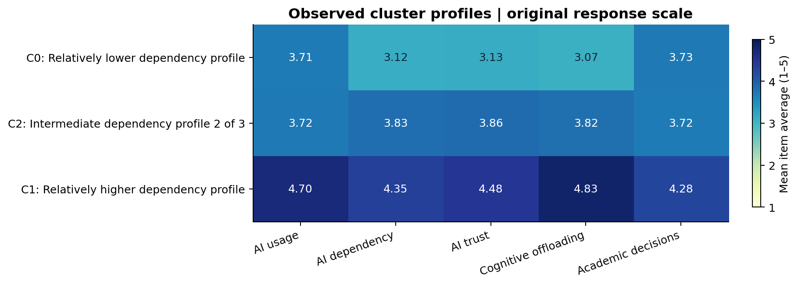